Next: Implementing IMC locally Up: Implementing Internal Model Controller Previous: IMC Design for Single
| 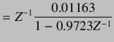 | (8.2) | |
|
Inverting delay free plant, we get
| ||
| 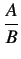 | 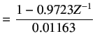 | (8.3) |
|
Comparing plant model with equation
| ||
| 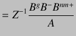 | (8.4) | |
|
We get,
| ||
| 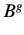 | 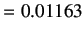 | (8.5) |
| 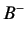 | (8.6) | |
| 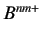 | (8.7) | |
| 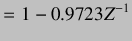 | (8.8) | |
|
For the stable system, internal model controller is given by
| ||
| 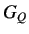 | 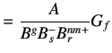 | (8.9) |
| 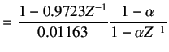 | (8.10) | |
|
Now,
| ||
| 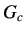 | 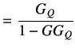 | (8.11) |
| 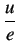 | 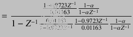 | (8.12) |
|
After simplifying, we get
| ||
| 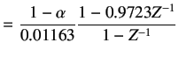 | (8.13) | |
 |
(8.14) | |
|
where,
| ||
| 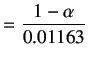 | (8.15) | |
|
Hence,
| ||
| 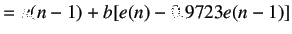 | (8.16) | |
The output of Xcos is shown in figure 8.4. Figure shows three plots. First sub plot shows setpoint and output temperature profile. Second sub plot shows control effort and third sub plot shows error between setpoint and plant output.
The same experiment result for is as shown in fig 8.5. By comparing the two graphs, we can say that for the response of the controller is sluggish. For , the controller starts responding quickly and no overshoots are seen in the temperature profile.